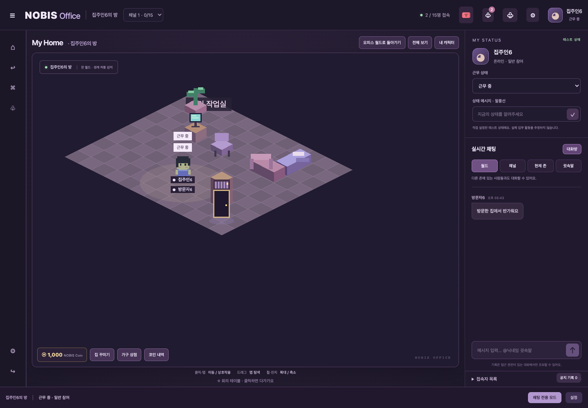
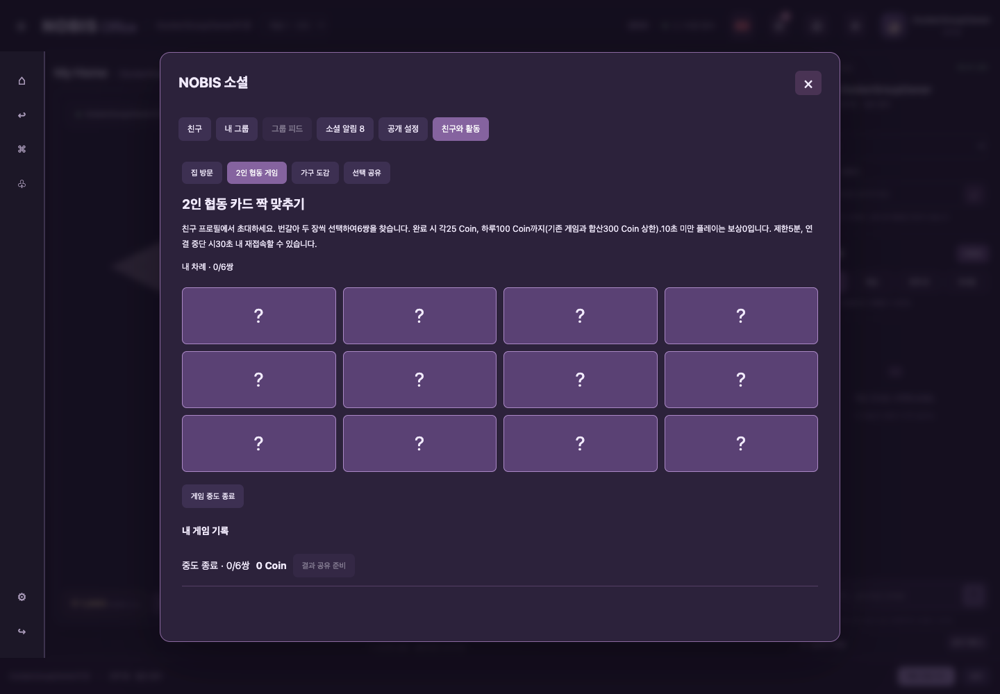
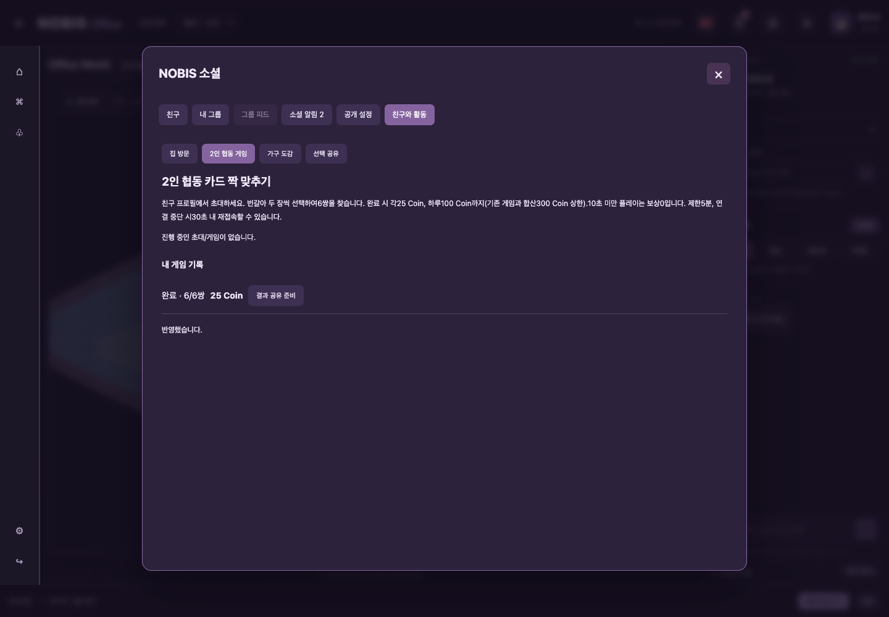
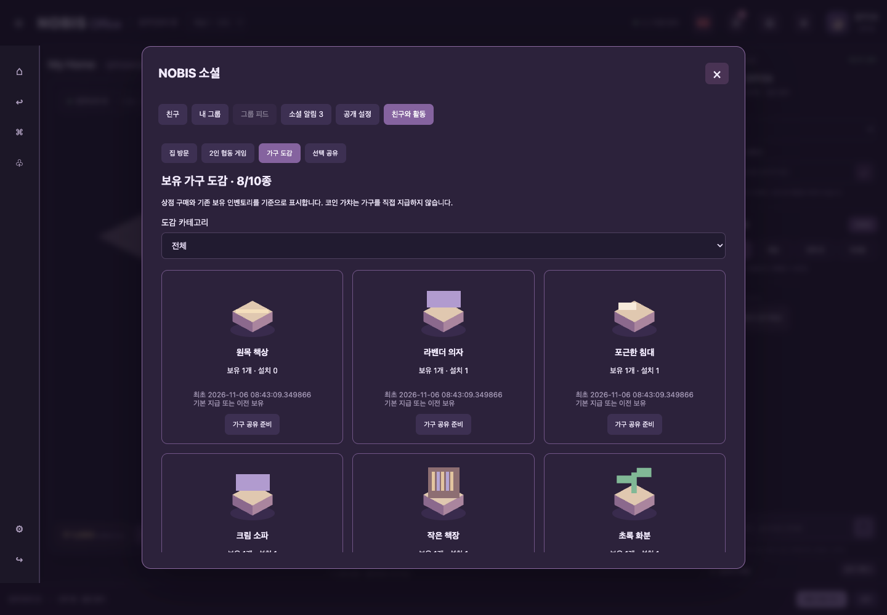
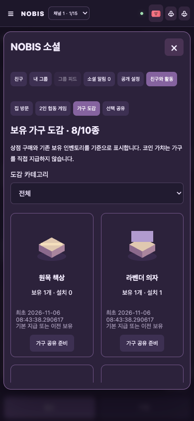
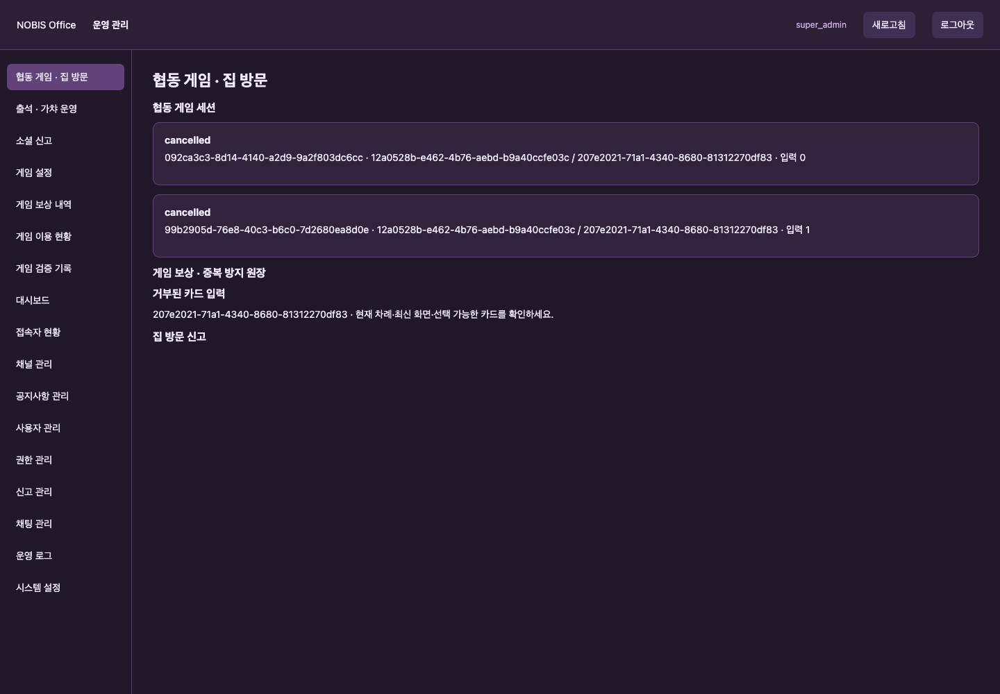
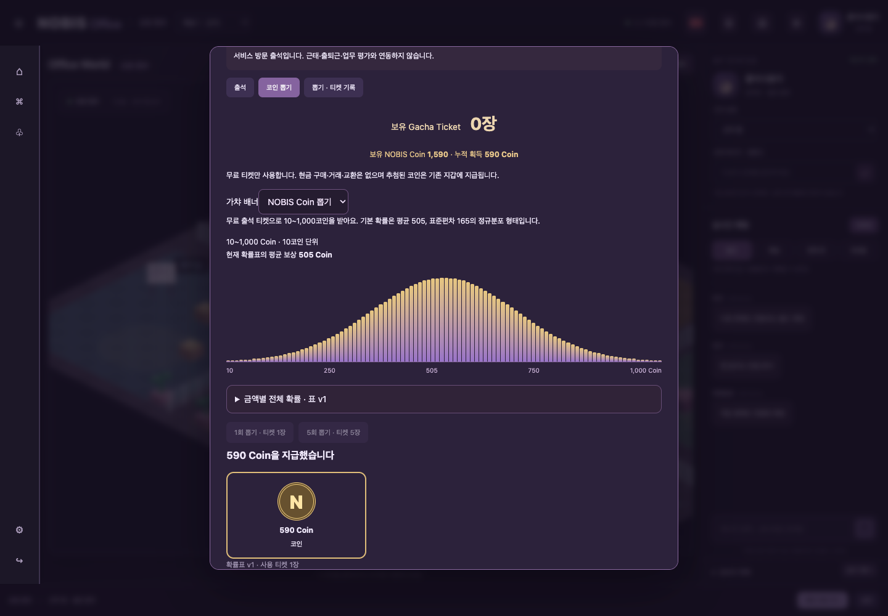

NOBIS Office · Phase 6
집 방문 · 협동 카드 게임 · 보유 도감 · 직접 선택 공유
출석→티켓→Coin가챠→상점→집 꾸미기. 기존 확률표를 보존했습니다.
서버190 / 전체 브라우저21 / 게임시스템20 통과. 신규 PostgreSQL 브라우저3, ARM64 Docker 운영 인증/업그레이드/집 소켓/재시작과 최종 운영 화면을 확인했습니다.
친구 집 방문 · 아바타 · 집 안 채팅

서버가 관리하는2인 협동 카드 보드

협동6쌍 완주 ·25 Coin 지급

상점 구매·보유 가구 도감

390px 모바일 친구와 활동

운영자 세션·거부 입력·보상·집 방문 신고

기존 확률 유지 · 코인 가챠 · 누적 획득
